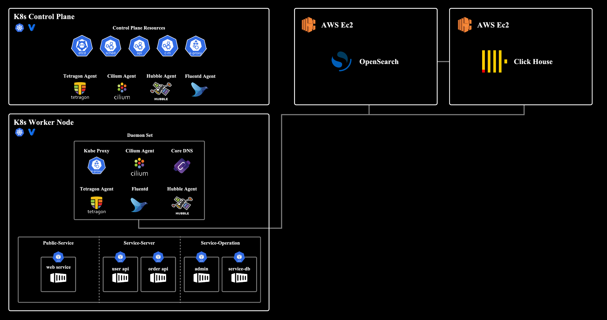

01
eBPF 기반 Kubernetes 위협 관측 시스템
컨테이너 환경에서 유실되는 로그 문제를 해결하고 실시간 분석 체계를 설계했습니다.
02
포렌식 아티팩트 기반 CTI 분석 엔진
포렌식 분석 지연을 해결하고 도구 단절 문제를 통합한 분석 파이프라인을 설계했습니다.
CTI Analyst · Threat Hunter
파편화된 로그를 공격 시나리오로 재구성하는 보안 엔지니어
이벤트 유실과 분석 지연 문제를 해결하기 위해
데이터 수집 구조부터 분석 파이프라인까지 직접 설계하고 개선했습니다.
컨테이너 환경에서 유실되는 로그 문제를 해결하고 실시간 분석 체계를 설계했습니다.
포렌식 분석 지연을 해결하고 도구 단절 문제를 통합한 분석 파이프라인을 설계했습니다.
컨테이너 환경에서 유실되는 보안 이벤트 문제를 해결하기 위해, 커널 레벨 수집과 고속 상관분석 구조를 결합한 파이프라인을 설계했습니다.

분산된 포렌식 도구 환경에서 발생하는 분석 단절 문제를 해결하기 위해, 아티팩트 파싱부터 CTI 연계까지 통합된 분석 파이프라인을 설계했습니다.